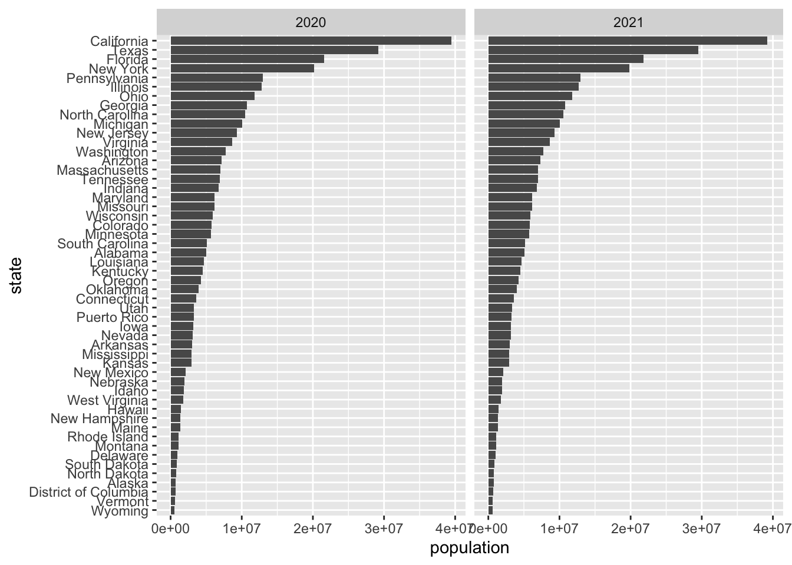
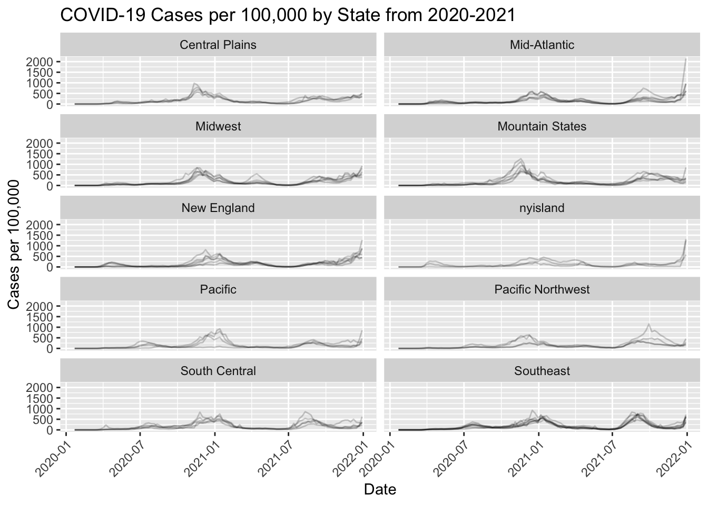

source(file.path(getwd(), "/census-key.R"))Problem set 3
Max points: 12.
In the next problem set, we plan to explore the relationship between COVID-19 death rates and vaccination rates across US states by visually examining their correlation. This analysis will involve gathering COVID-19 related data from the CDC’s API and then extensively processing it to merge the various datasets. Since the population sizes of states vary significantly, we will focus on comparing rates rather than absolute numbers. To facilitate this, we will also source population data from the US Census to accurately calculate these rates.
In this problem set we will learn how to extract and wrangle data from the data US Census and CDC APIs.
All answers should be submitted in pset-03-wrangling.qmd. Be sure to include a rendered version of your file and a raw code file that successfully would render on a new computer.
- (1 point) Get an API key from the US Census at https://api.census.gov/data/key_signup.html. You can’t share this public key. But your code has to run on a TFs computer. Assume the TF will have a file in their working directory (i.e. in the
BIOSTAT620_pset_sol/p3/directory, assuming that you placepset-03-wrangling.qmdin theBIOSTAT620_pset_sol/p3/folder) namedcensus-key.Rwith the following one line of code:
census_key <- "A_CENSUS_KEY_THAT_WORKS"Write a first line of code for your problem set that defines census_key by running the code in the file census-key.R.
- (1 point) The US Census API User Guide provides details on how to leverage this valuable resource. We are interested in vintage population estimates for years 2021 and 2022. From the documentation we find that the endpoint is:
url <- "https://api.census.gov/data/2021/pep/population"Use the httr2 package to construct the following GET request.
https://api.census.gov/data/2021/pep/population?get=POP_2020,POP_2021,NAME&for=state:*&key=YOURKEYHERECreate an object called request of class httr2_request with this URL as an endpoint. Print out request to check that the URL matches what we want.
library(httr2)
url <- "https://api.census.gov/data/2021/pep/population"
request = request(paste0(url,
paste0("?get=POP_2020,POP_2021,NAME&for=state:*&key=", census_key)))
print(request)<httr2_request>GET
https://api.census.gov/data/2021/pep/population?get=POP_2020,POP_2021,NAME&for=state:*&key=8880233c9abc9f4d98a8b0ef42ea7894548a9e7eBody: empty- (1 point) Make a request to the US Census API using the
requestobject. Save the response to and object namedresponse, and print it out here. Check the response status of your request and make sure it was successful. You can learn about status codes here.
response <- request |> req_perform()
print(response)<httr2_response>GET
https://api.census.gov/data/2021/pep/population?get=POP_2020,POP_2021,NAME&for=state:*&key=8880233c9abc9f4d98a8b0ef42ea7894548a9e7eStatus: 200 OKContent-Type: application/jsonBody: In memory (2112 bytes)- (1 point) Use a function from the httr2 package to determine the content type of your response (print it out).
resp_headers(response)<httr2_headers>Cache-Control: max-age=60, must-revalidate
Access-Control-Allow-Origin: *
Access-Control-Allow-Methods: GET
Access-Control-Allow-Headers: Origin, X-Requested-With, Content-Type, Accept
Referrer-Policy: same-origin
Content-Security-Policy: default-src 'self'; img-src 'self' data:; object-src 'none'; script-src 'self' 'unsafe-inline'; style-src 'self' 'unsafe-inline'; frame-ancestors 'none'; upgrade-insecure-requests; block-all-mixed-content
X-Content-Type-Options: nosniff
Content-Type: application/json;charset=utf-8
Date: Fri, 31 Jan 2025 17:08:34 GMT
Strict-Transport-Security: max-age=31536000
Set-Cookie: TS010383f0=01283c52a4985267a095875030625d60c2c1bdeb3a4e702ba0b87c3b3b6c8cda53077765430e35770823d823fe17c2ae2f1cd8028c; Path=/; Domain=.api.census.gov; Secure; HttpOnly;
Transfer-Encoding: chunked- (1 point) Use just one line of code and one function to extract the data into a matrix. Print out the first few rows of the matrix (title:
population). Hints: 1) Use theresp_body_jsonfunction. 2) The first row of the matrix will be the variable names and this OK as we will fix in the next exercise.
population <- response |> resp_body_string() |> jsonlite::fromJSON()
head(population) [,1] [,2] [,3] [,4]
[1,] "POP_2020" "POP_2021" "NAME" "state"
[2,] "3962031" "3986639" "Oklahoma" "40"
[3,] "1961455" "1963692" "Nebraska" "31"
[4,] "1451911" "1441553" "Hawaii" "15"
[5,] "887099" "895376" "South Dakota" "46"
[6,] "6920119" "6975218" "Tennessee" "47" - (1 point) Examine the
populationmatrix you just created. Notice that 1) it is not tidy, 2) the column types are not what we want, and 3) the first row is a header. Convertpopulationto a tidy dataset. Remove the state ID column and change the name of the column with state names tostate_name. Add a column with state abbreviations calledstate. Make sure you assign the abbreviations for DC and PR correctly. Hint: Use the janitor package to make the first row the header. Print out the first few rows of your cleaned dataset.
library(tidyverse)── Attaching core tidyverse packages ──────────────────────── tidyverse 2.0.0 ──
✔ dplyr 1.1.4 ✔ readr 2.1.5
✔ forcats 1.0.0 ✔ stringr 1.5.1
✔ ggplot2 3.5.1 ✔ tibble 3.2.1
✔ lubridate 1.9.4 ✔ tidyr 1.3.1
✔ purrr 1.0.2
── Conflicts ────────────────────────────────────────── tidyverse_conflicts() ──
✖ dplyr::filter() masks stats::filter()
✖ dplyr::lag() masks stats::lag()
ℹ Use the conflicted package (<http://conflicted.r-lib.org/>) to force all conflicts to become errorslibrary(janitor)
Attaching package: 'janitor'
The following objects are masked from 'package:stats':
chisq.test, fisher.testpopulation <- population |>
row_to_names(row_number = 1)|>
as_tibble()|>
select(-state)|>
rename(state_name = NAME)|>
pivot_longer(cols = starts_with("POP"), names_to = "year", values_to = "population")|>
mutate(year = gsub("POP_", "", year))|>
mutate(across(c(year, population), as.numeric))|>
mutate(
state = case_when(
state_name == "District of Columbia" ~ "DC",
state_name == "Puerto Rico" ~ "PR",
TRUE ~ state.abb[match(state_name, state.name)]
)
)
head(population)# A tibble: 6 × 4
state_name year population state
<chr> <dbl> <dbl> <chr>
1 Oklahoma 2020 3962031 OK
2 Oklahoma 2021 3986639 OK
3 Nebraska 2020 1961455 NE
4 Nebraska 2021 1963692 NE
5 Hawaii 2020 1451911 HI
6 Hawaii 2021 1441553 HI - (1 point) As a check, make a barplot of states’ 2021 and 2022 populations. Show the state names in the y-axis ordered by descending population size. Hint: You will need to use
facet_wrap.
population |> arrange(desc(population))|>
ggplot(aes(x = factor(state_name, levels = unique(state_name[order(population)])), y = population)) +
geom_col() +
coord_flip() +
facet_wrap(~year) +
xlab("state")
- (1 point) The following URL:
url <- "https://github.com/datasciencelabs/2024/raw/refs/heads/main/data/regions.json"points to a JSON file that lists the states in the 10 Public Health Service (PHS) defined by CDC. We want to add these regions to the population dataset. To facilitate this create a data frame called regions that has two columns state_name, region, region_name. One of the regions has a long name. Change it to something shorter. Print the first few rows of regions. Make sure that the region is a factor.
library(jsonlite)
Attaching package: 'jsonlite'The following object is masked from 'package:purrr':
flattenlibrary(purrr)
url <- "https://github.com/datasciencelabs/2024/raw/refs/heads/main/data/regions.json"
regions <- fromJSON(url)|>
mutate(region = as.character(region))|>
mutate(region = as.factor(region),
region_name = recode(region_name,
"New York and New Jersey, Puerto Rico, Virgin Islands" = "nyisland"))|>
unnest(states)|>
rename(state_name = states)
head(regions)# A tibble: 6 × 3
region region_name state_name
<fct> <chr> <chr>
1 1 New England Connecticut
2 1 New England Maine
3 1 New England Massachusetts
4 1 New England New Hampshire
5 1 New England Rhode Island
6 1 New England Vermont - (1 point) Add a region and region name columns to the
populationdata frame using the joining methods we have learned. Print out the first few rows.
population <- population|>
left_join(regions, by = "state_name")
head(population)# A tibble: 6 × 6
state_name year population state region region_name
<chr> <dbl> <dbl> <chr> <fct> <chr>
1 Oklahoma 2020 3962031 OK 6 South Central
2 Oklahoma 2021 3986639 OK 6 South Central
3 Nebraska 2020 1961455 NE 7 Central Plains
4 Nebraska 2021 1963692 NE 7 Central Plains
5 Hawaii 2020 1451911 HI 9 Pacific
6 Hawaii 2021 1441553 HI 9 Pacific - (1 point) From reading https://data.cdc.gov/ we learn the endpoint
https://data.cdc.gov/resource/pwn4-m3yp.jsonprovides state level data from SARS-COV2 cases. Use the httr2 tools you have learned to download this into a data frame. Is all the data there? If not, comment on why.
api <- "https://data.cdc.gov/resource/pwn4-m3yp.json"
cases_raw <- request(api) |> req_perform() |> resp_body_string() |> jsonlite::fromJSON()
head(cases_raw) date_updated state start_date end_date
1 2023-02-23T00:00:00.000 AZ 2023-02-16T00:00:00.000 2023-02-22T00:00:00.000
2 2022-12-22T00:00:00.000 LA 2022-12-15T00:00:00.000 2022-12-21T00:00:00.000
3 2023-02-23T00:00:00.000 GA 2023-02-16T00:00:00.000 2023-02-22T00:00:00.000
4 2023-03-30T00:00:00.000 LA 2023-03-23T00:00:00.000 2023-03-29T00:00:00.000
5 2023-02-02T00:00:00.000 LA 2023-01-26T00:00:00.000 2023-02-01T00:00:00.000
6 2023-03-23T00:00:00.000 LA 2023-03-16T00:00:00.000 2023-03-22T00:00:00.000
tot_cases new_cases tot_deaths new_deaths new_historic_cases
1 2434631.0 3716.0 33042.0 39.0 23150
2 1507707.0 4041.0 18345.0 21.0 21397
3 3061141.0 5298.0 42324.0 88.0 6800
4 1588259.0 2203.0 18858.0 23.0 5347
5 1548508.0 5725.0 18572.0 47.0 4507
6 1580709.0 1961.0 18835.0 35.0 2239
new_historic_deaths
1 0
2 0
3 0
4 0
5 0
6 0COMMENT: It is not all the data, because we have the default limit of pulling down the data. We need to let the cdc know we want more.
- (1 point) The reason you see exactly 1,000 rows is because CDC has a default limit. You can change this limit by adding
$limit=10000000000to the request. Rewrite the previous request to ensure that you receive all the data. Then wrangle the resulting data frame to produce a data frame with columnsstate,date(should be the end date) andcases. Make sure the cases are numeric and the dates are inDateISO-8601 format. Print out the first several rows.
api <- "https://data.cdc.gov/resource/pwn4-m3yp.json"
request <- request(paste0(api, "?$limit=100000"))
response <- request |> req_perform() |> resp_body_string()
cases_raw <- fromJSON(response)
cases_raw <- cases_raw |> select(state, end_date, new_cases) |>
rename(date = end_date, cases = new_cases)|>
mutate(date = ymd_hms(date),
cases = as.numeric(cases),
year = year(date))
head(cases_raw) state date cases year
1 AZ 2023-02-22 3716 2023
2 LA 2022-12-21 4041 2022
3 GA 2023-02-22 5298 2023
4 LA 2023-03-29 2203 2023
5 LA 2023-02-01 5725 2023
6 LA 2023-03-22 1961 2023- (1 point) For 2020 and 2021, make a time series plot of cases per 100,000 versus time for each state. Stratify the plot by region name and make a separate line plot for each state. Don’t use colors for this plot, but set
alpha = 0.2to make the plots more easily visable. Make sure to label your graph appropriately.
library(lubridate)
x <- cases_raw |> filter(date >= make_date(2020,1,1) & date <= make_date(2021,12,31)) |>
left_join(population, by = c("state", "year")) |>
mutate(rate = cases / population * 100000) |>
filter(!is.na(state_name))
x |> ggplot(aes(x = date, y = rate, group = state)) + geom_line(alpha = 0.2) +
facet_wrap(~region_name, nrow = 5) + labs(
title = "COVID-19 Cases per 100,000 by State from 2020-2021",
x = "Date",
y = "Cases per 100,000"
) + theme(axis.text.x = element_text(angle = 45, hjust = 1))